Auxiliar 6: Conductores
Propiedades electrostáticas de los conductores en equilibrio: campo nulo en su interior, carga solo en superficie y campo perpendicular al salir.
Temas que cubre
- Las 4 propiedades de un conductor en equilibrio
- Conductores con cavidades internas
- Inducción de carga en las superficies interior y exterior
- Campo eléctrico en la superficie: $\mathbf{E} = \sigma/\varepsilon_0\,\hat{n}$
- Densidades superficiales de carga y su cálculo
Conceptos clave
E = 0 en el interior
En equilibrio, los electrones libres se redistribuyen hasta anular el campo interno. Si hubiera campo, los electrones seguirían moviéndose, contradiciendo el equilibrio.
Carga en la superficie
Por Gauss: si $\mathbf{E}=0$ en el interior, una superficie gaussiana justo dentro del conductor encierra carga cero. Toda carga libre queda en la superficie.
Conductor con cavidad
Si hay una carga $q$ en la cavidad, la superficie interior acumula $-q$ (inducida) y la exterior $+q$ (si el conductor era neutro). El campo exterior es idéntico al de carga $+q$ puntual.
Campo en la superficie
Justo fuera del conductor, $\mathbf{E}$ es perpendicular a la superficie y vale $\sigma/\varepsilon_0$. Las zonas puntiagudas tienen $\sigma$ grande → campo intenso (efecto corona).
Fórmulas fundamentales

Qué hay que entender
- Aplica Gauss con superficie dentro del conductor ($\mathbf{E}=0$) para determinar carga inducida en la cavidad interior.
- La carga total del conductor se conserva: $q_{\text{ext}} = q_{\text{total}} - q_{\text{int}}$.
- El potencial del conductor es constante (desconocido, a determinar por condiciones de borde).
- El campo fuera solo depende de la distribución exterior; el campo en la cavidad solo de la carga dentro de ella.